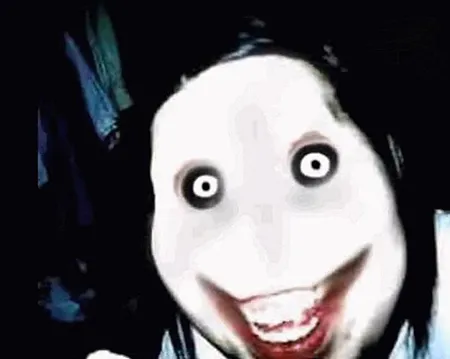

Jeff the Killer - это мифическое существо, которое появилось в интернете и стало популярным в культуре крипипасты. Он описывается как высокий, худощавый человек с холодным взглядом и необычайной скоростью и ловкостью. Jeff the Killer часто ассоциируется с городскими улицами и парками, где он охотится на одиночек.

- Имя: Jeffrey Woods
- Внешность: бледная кожа, черные волосы и широкая неестественная улыбка
- Рост: около 180 сантиметров
- Вес: 70 килограмм
- Возраст: 15-18 лет
- Оружие: нож
- Уровень угрозы: высокий
- Место обитания: городские улицы, парки
- Поведение: жестокий, нестабильный, скрытный, охотится на людей в особенности на одиночек
- Психологические воздействия: вызывает страх, тревогу, чувство беспомощности
- Особенности: одна из самых отличительных черт - он уродует собственное лицо чтобы постоянно улыбаться, худощавое телосложение, холодный взгляд, необычайная скорость и ловкость